1. PLC硬件电路图及说明
📋 核心要点
提升机工艺控制系统的核心由两套SIMATIC S7-400系列PLC自动化系统组成：
- 系统A：实现提升机控制和安全监视功能
- 系统B：实现安全监视功能
这样就组成了一套提升机控制和双通道冗余的安全监视系统。
1.1 系统A硬件组成
- 电源模块：为基架上的其它模块提供内部工作电源
- CPU模块：选用CPU416-2DP（性能更强的CPU）
- FM458工艺控制器：高性能工艺控制器，采用64位RISC CPU
- EXM438扩展模块：用于连接外设I/O和编码器
- 通讯模块CP443-5：连接分布式Profibus DP从站
1.2 系统B硬件组成
- 电源模块
- CPU模块：选用CPU414-2DP或CPU412-2DP
- FM458工艺控制器：实现编码器的位置速度解算功能
- EXM438扩展模块
- 通讯模块CP443-5
💡 FM458工艺控制器特点
- 采用64位RISC CPU，具有强大的浮点运算能力
- 固定的程序处理周期，最快为0.1ms
- 非常适合执行要求高动态响应的闭环控制任务
- 集成Profibus DP通讯口，最高波特率为12M bps
1.3 PLC硬件电路图
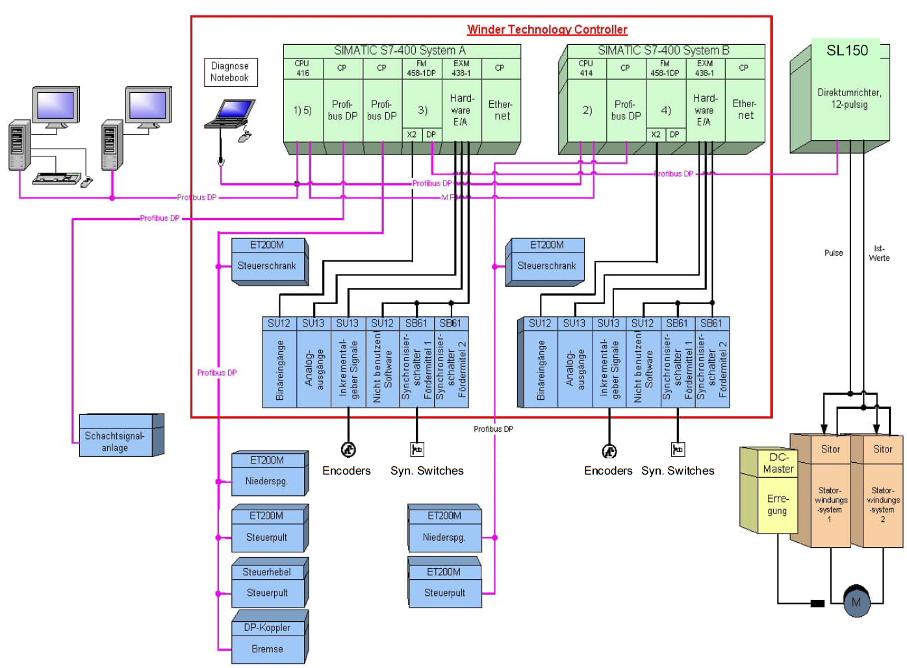
图1-1：旧版PLC硬件电路图（第4页）
图1-1：新版S7-1500 PLC硬件电路图
📝 知识检查
2. 控制程序功能框图
控制程序功能框图展示了系统A和系统B的功能分配和相互关系。
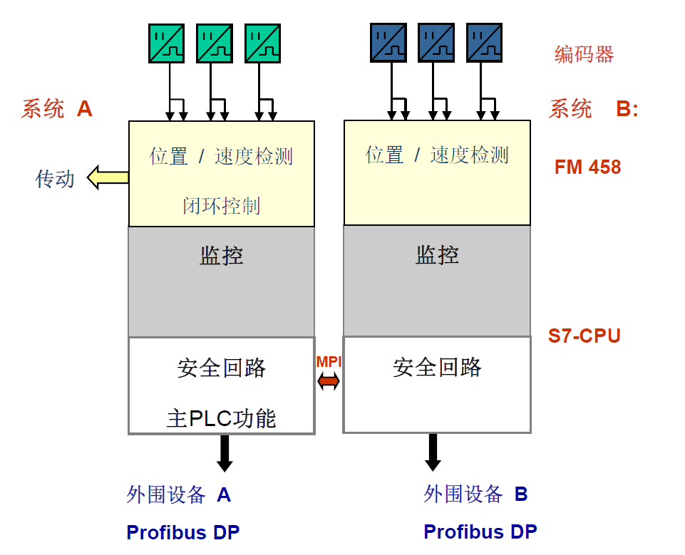
图1-1：PLC硬件电路图（第4页）
| 🔧 FM458 系统 A (主驱动 & 闭环控制) |
⚙️ FM458 系统 B (冗余监控 & 后备计算) |
|---|---|
|
|
| ⚙️ S7 系统 A |
⚙️ S7 系统 B |
|
|
🔧 应知应会
- 理解系统A和系统B的功能分配
- 掌握FM458和S7 CPU的分工
- 了解Profibus DP网络通讯架构
3. 闭环控制原理及说明
⚙️ 三闭环控制系统
提升机的闭环控制是一个三闭环的运动控制系统，在系统A的FM458和传动中实现：
- 位置闭环：位置控制器
- 速度闭环：速度控制器
- 电流闭环：电流控制器（在传动中实现）
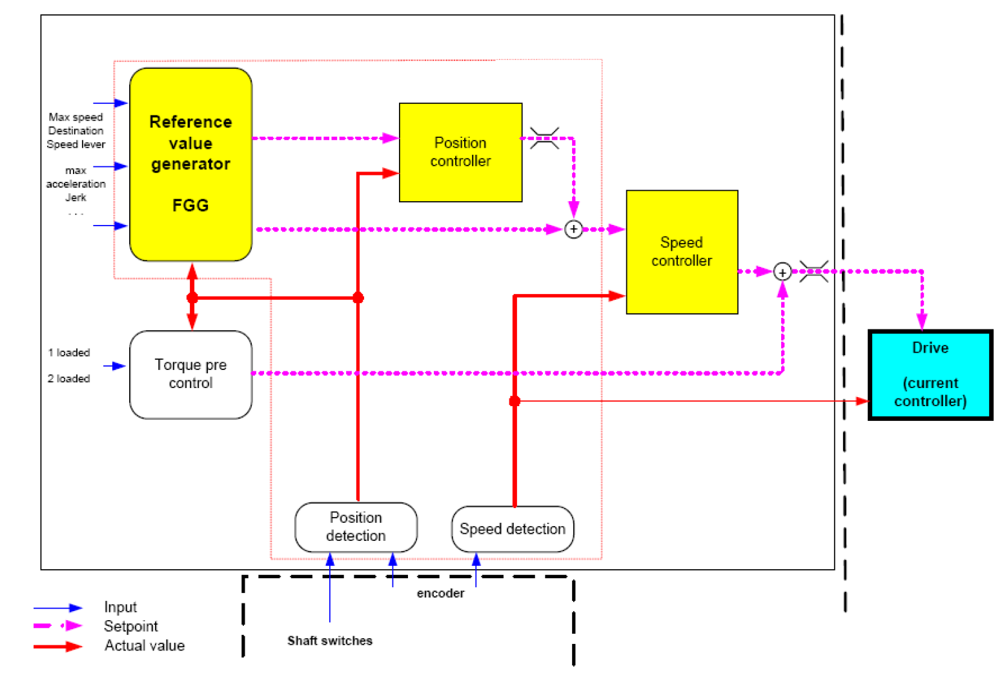
图3-1：闭环控制原理图（第8页）
3.1 实际位置和速度检测
系统采用3个双路输出的增量编码器来检测位置和速度：
- 编码器1：速度编码器（装在橡胶轮或滚筒输出轴）
- 编码器2：位置编码器（装在滚筒输出轴）
- 编码器3：监视编码器（装在天轮或导向轮轴端）
每个编码器均在FM458中被解算出箕斗1和箕斗2的位置和速度，共产生6个位置和6个速度。
▶ 编码器配置
系统采用3个双路输出的增量编码器来检测位置和速度：
- 编码器1：速度编码器（装在橡胶轮或滚筒输出轴）
- 编码器2：位置编码器（装在滚筒输出轴）
- 编码器3：监视编码器（装在天轮或导向轮轴端）
每个编码器均在FM458中被解算出箕斗1和箕斗2的位置和速度，共产生6个位置和6个速度。
▶ 同步开关
由于编码器是增量式的，并且装在滚筒或导向轮/天轮上，钢丝绳和这些转动部件之间会有相对滑动或蠕动，并且钢丝绳绳长也会有伸缩变化，这些都会影响箕斗的实际位置。
为了检测箕斗的位置，需要在井筒中安装同步开关，以获得箕斗的绝对位置。
同步开关采用磁感应开关，动作可靠准确。每个同步开关并行接入系统A和系统B（EXM438），箕斗每次经过同步开关时对应箕斗的位置均会被修正。
3.2 设定点发生器
提升机的设定点发生器是一个具有柔性的，适应各种提升机工艺的功能块。
✨ 设定点发生器特性
- 通过井筒极限、最大速度、加速度、减速度、加速度变化率、爬入和爬出距离等参数，适应每个项目的工艺要求
- 可以实现两个爬出段和两个爬入段
- 由于有加速度变化率的控制，使得加速度在整个提升周期中匀速变化，设定速度曲线全程平滑可导
- 从而使得闭环控制非常平稳，有效减小了对机械的冲击和钢丝绳的颤动
- 对于人员提升保证了人员乘坐的舒适感
3.3 位置控制器
位置控制器是一个比例控制器。
- 设定点发生器输出的设定位置 → 设定值输入
- 来自位置编码器（编码器2）所选箕斗的位置 → 实际值输入
- 位置控制器的输出 → 附加的速度设定值
位置控制器使实际位置精确跟随设定位置，实现了真正的位置闭环，使提升机达到精确停车。
3.4 速度控制器
速度控制器是一个比例积分控制器。
- 设定点发生器输出的设定速度 + 位置控制器输出的附加速度设定值 → 设定值输入
- 速度编码器（编码器1）的速度（用箕斗1的速度方向） → 实际值输入
- 速度控制器输出 → 力矩设定值
💡 深入理解PI控制
速度控制器是提升机控制的核心，理解PI控制理论对于掌握提升机控制系统至关重要。
点击下方按钮，查看交互式PI控制理论学习模块：
3.5 力矩预控制
力矩预控制是在速度控制器PI输出之后直接加上的力矩设定值。
提升机的力矩预控制由三部分相加组成：
- 载荷预置力矩：根据箕斗的装载状态，产生相应载重所需的力矩
- 加速度预置力矩：提供用于加速或减速的这部分力矩，与加速度成正比
- 机械预置力矩：补偿两个箕斗的自重差和首尾绳的重量差
📝 知识检查
4. 安全保护回路
⚠️ 三级安全保护
提升机采用三级安全保护回路，保护等级从高到低分别是：
- 安全回路（SAC - Safety Circuit）：最高级别
- 电气停车回路（ESC - Electrical Stop Circuit）：中间级别
- 闭锁回路（LOC - Lockout Circuit）：最低级别
4.1 安全回路（SAC）
- 两个系统的安全回路继电器触点串联接入液压制动系统
- 安全回路触发 → 立刻导致机械抱闸
- 即提升机在制动闸产生的摩擦力作用下停车
- 机械抱闸也被称作安全制动
安全回路中包含的信号：
- 过卷
- 欠电压
- 传动故障
- 中压柜分闸
- 直流快开分闸（仅直流传动）
- 辅助设备断电或故障
- 电机和变压器超温故障
- 操作台紧停按钮
4.2 电气停车回路（ESC）
- 若提升机正在自动方式下运行，电气停车回路触发 → 立刻导致提升机在闭环控制下以预设的减速度通过电机的转矩停车并工作抱闸
- 由于电气停车回路的结果被放入了闭锁回路，所以电气停车回路触发会导致闭锁回路触发
电气停车回路中包含的信号：
- 轴承超温故障
- 润滑站故障
- 信号系统紧停信号
- 闸控系统电气停车信号
4.3 闭锁回路（LOC）
- 两个系统的闭锁回路继电器触点串联接入液压制动系统
- 若提升机在手动方式并停车抱闸情况下，闭锁回路触发 → 将导致闸控手柄不能敞闸，实现提升机的闭锁
- 若提升机在手动方式下敞闸运行，闭锁回路触发 → 提升机可继续运行，但操作台会发出声音报警
- 操作工通过闸控手柄手动抱闸后，闸控手柄将不能敞闸，提升机被闭锁
- 若提升机正在自动方式下运行，闭锁回路触发 → 将允许提升机完成本次提升，到预设终点停车抱闸后则禁止下次提升
闭锁回路中包含的信号：
- 电机、变压器和轴承超温报警
- 辅助设备报警
- 信号系统闭锁信号
- 闸控系统闭锁信号
🔑 关键概念
冗余保护：系统A和系统B的PLC中均有由软件实现的三个安全保护回路，这两个系统的两套软回路实现了冗余保护。
5. 安全监视（16项）
除了闭环控制监视只存在于系统A的FM458中，其它提升工艺监视存在于系统A和系统B的S7 CPU中，并且逻辑是相同的，这样就实现了双通道的冗余监视。
🔍 诊断PC（Diagnosis PC）
为了便于对安全监视进行调试和诊断，采用组态软件WinCC Flexible开发了一个人机界面，叫作"诊断PC"。
功能包括：
- 编码器位置和速度显示
- 编码器位置修改
- 磨损修正系数设定
- 监视旁路
- 监视测试
- 所有安全监视的状态总览
- 每一个安全监视的详细实时显示
5.1 连续速度监视
激活条件：无条件
触发结果：安全回路
监视对象：箕斗速度的绝对值（编码器1）
参考对象：连续速度包络线参考值
5.2 末段监视
激活条件：无条件
触发结果：安全回路
监视对象：连续速度包络线参考值
参考对象：阶梯参考值
5.3 电子阶梯速度监视
激活条件：非紧急手动模式
触发结果：安全回路
监视对象：箕斗速度的绝对值（编码器3）
参考对象：电子阶梯速度参考值
▶ 连续速度监视 vs 电子阶梯速度监视
相同点：
- 连续速度包络线参考值的计算方法和电子阶梯速度参考值的计算方法相同
- 这两种监视均限制了箕斗在井筒中和行程末段减速期间运行的最大速度
不同点：
- 连续速度包络线参考值是在S7 PLC中实时计算产生的
- 电子阶梯速度参考值则是在Excel文件Parameter S7中预先算好，并下载到S7中的
- 这两种监视用不同的算法实现了冗余的安全保护
5.4 井筒开关监视
激活条件：非紧急手动模式
触发结果：安全回路
监视对象：井筒开关状态
5.5 - 5.16 其他安全监视
- 5.5 速度相互监视 编码器1/2
- 5.6 位置跳跃监视 编码器1-3
- 5.7 位置相互监视 编码器2/3（滑绳监视）
- 5.8 速度包络线相互监视 系统A/B
- 5.9 位置相互监视 编码器2 系统A/B
- 5.10 电气停车监视
- 5.11 带载下降监视
- 5.12 带载提升监视
- 5.13 错向监视
- 5.14 位置设定值/实际值监视
- 5.15 速度设定值/实际值监视
- 5.16 力矩设定值/实际值监视
⚠️ 监视状态说明
- 触发（Tripped）：在界面中以红色显示。表示该监视产生了故障输出。
- 未激活（Inactive）：在界面中以黄色显示。有的监视是有条件的，未激活是指当前条件下该监视不工作。
- 旁路（Bypassed）：在界面中以黄色显示。表示该监视被旁路，和未激活一样，该监视不工作。
6. 人机界面HMI
提升机通常配置两台台式PC作为人机界面HMI，并省去了操作台上传统的深度指示仪和模拟指示表。
💻 HMI功能特点
- 采用组态软件WinCC Flexible来开发
- 界面友好，信息准确完善
- 两台台式PC互为备用
- WinCC Flexible运行软件可内置OPC服务器，可以很容易地通过以太网将提升机集成到矿井综合信息系统中
HMI通常包括的画面：
- 主画面
- 中压配电系统
- 低压配电系统
- 主回路
- 设备上电
- 变压器/电机/轴承温度显示
- 电机通风冷却系统
- 液压制动系统
- 润滑系统
- 变频器冷却系统
- 装卸载/井筒信号系统
- 产量报表
- 实时和历史数据曲线
- 当前和历史报警信息
7. 液压制动系统
高安全性和高可用性提升机液压制动系统COBRA 01介绍。
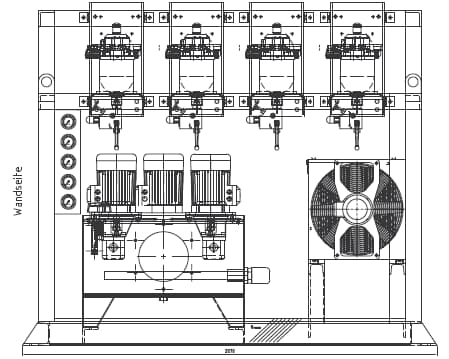
图7-1：液压制动系统组成（第18页）
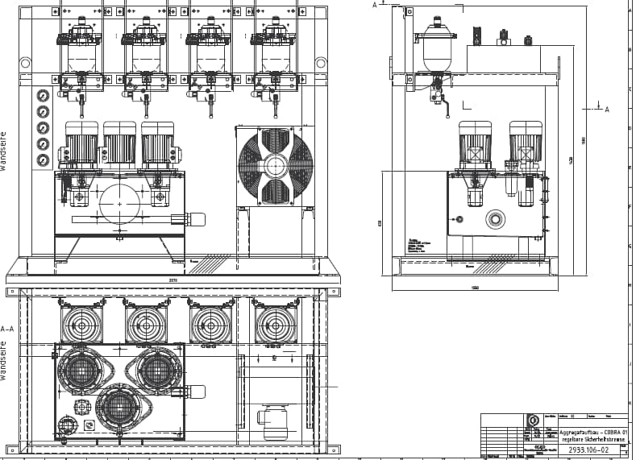
图7-2：COBRA 01液压动力单元（第19页）
7.1 系统组成
提升机液压制动系统COBRA 01由三部分组成：
- 带制动元件的闸座
- 液压动力单元
- 电气控制系统
制动元件依靠弹簧力对闸盘夹紧产生的摩擦力制动，液压力可以克服弹簧力，使摩擦力减小或使制动元件完全松开。液压动力单元提供液压压力，在电气控制系统的控制下对压力进行控制，实现工作制动和恒减速安全制动。此外电气控制系统还对液压元件和液压动力单元进行监视。
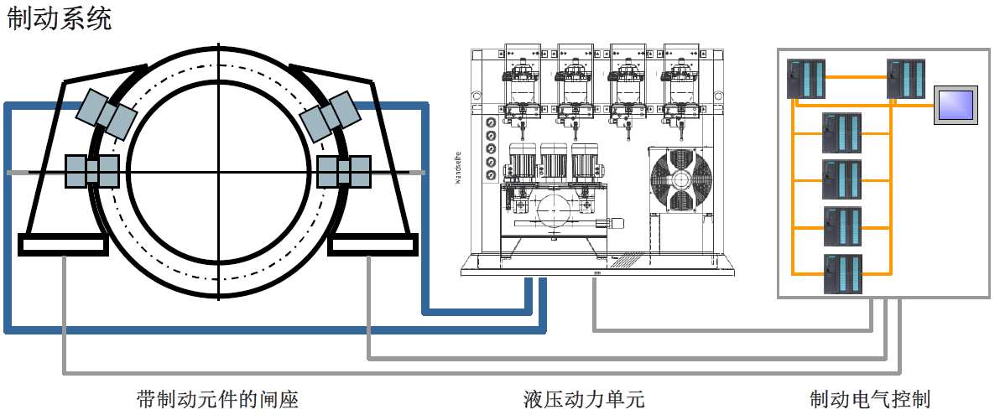
图7-1：液压制动系统组成（第18页）
7.2 液压动力单元特点
🔧 COBRA 01液压动力单元特点
- 简单，节省，紧凑
- 两套独立系统组成一个单元
- 所有重要元件均做备份
- 冗余的安全制动
- 两台泵互为完整备用
- 泵一旦出现故障，可方便切换
- 液压动力单元和电气控制系统均采用n+1通道设计
- 安全制动是由n个通道数字闭环控制实现的恒减速制动
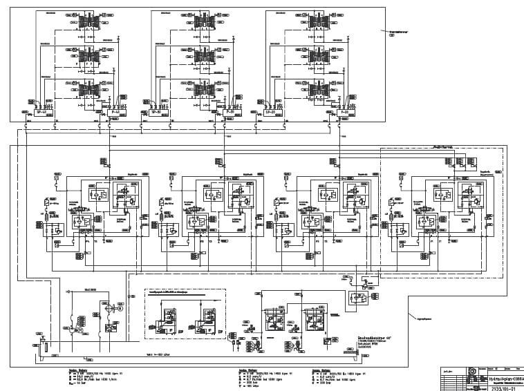
图7-3：COBRA 01液压原理图（第20页）
7.3 液压电气控制系统
COBRA 01液压电气控制系统特点：
- 采用多个S7-300 PLC CPU，并且使用Profibus DP现场总线组成一个系统
- 主控PLC采用双通道（两个S7-300 CPU），所有的制动控制和监视均是通过不同的PLC实现的
- 和液压动力单元一样，具有n+1通道
- 故障安全型的设计
- 操作面板OP提供友好的显示信息和参数调整功能，使得系统易于维护
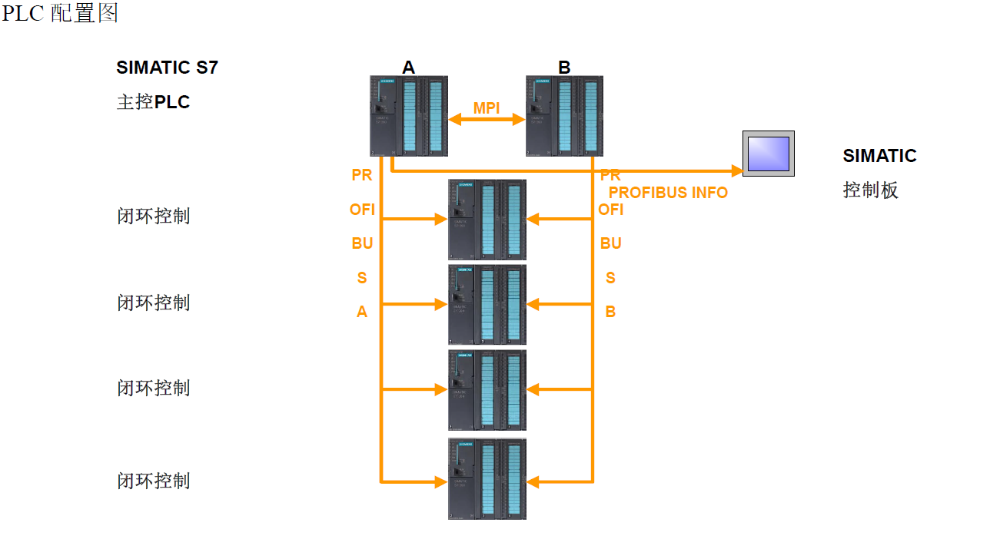
图7.3：PLC配置图（第22页）
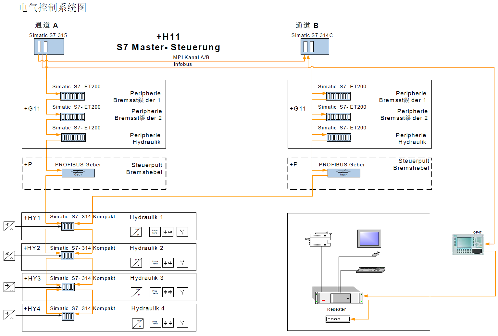
图7.3：电气控制系统图（第22页）
7.4 液压系统的n+1通道
🔑 n+1通道设计优势
- 每个液压通道都有为其单独配备的电气控制
- 每个液压通道都有为其单独配备的后备电池
- 每个液压通道都有为其单独配备的速度传感器信号
- 每个液压通道都有为其单独配备的压力传感器信号
- 每个液压通道都可独立于其他的液压通道运行
- 任何一个通道出现的故障都不影响整个系统的正常工作
- 在任何情况下安全制动都是恒减速的
- 通过控制转换开关可以非常方便地启用备用通道
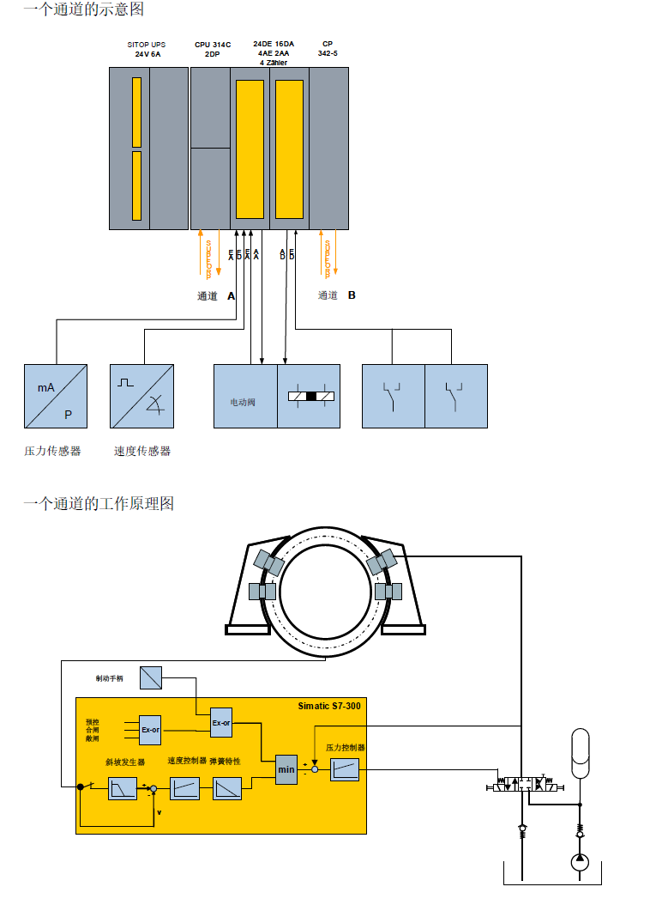
图7-6：n+1通道示意图（第23页）
8. 提升信号和装卸载
提升机控制系统可以和提升信号和装卸载系统通过软硬件接口协调工作。
🔗 系统兼容性
在经过预先的接口设计后，也可以使用任何进口和国产的第三方的信号和装卸载系统，并有很多成功的例子。
9. 系统工作过程
提升机的工作过程根据控制方式不同而有所区别：
▶ 手动方式工作过程
- 提升机已完成辅助设备上电，安全回路和电气停车回路已闭合，闭锁回路除打点信号外的其它信号均已备好
- 提升机停车，到位，工作施闸，信号系统停点
- 司机按提升启动按钮
- 司机松开闸控手柄，并操作控制手柄
- 工作闸开始释放，工作施闸反馈信号消失
- 工作闸完全释放
- 闭环控制激活，开始工作（设定点发生器和三个闭环控制器）
- 司机将控制手柄回零，在速度接近零时关闭闸控手柄
- 工作施闸反馈信号到来，闭环控制使能取消，停止工作
- 提升机停车，到位，工作施闸，停点
▶ 自动方式工作过程
- 提升机已完成辅助设备上电，安全回路和电气停车回路已闭合
- 提升机停车，到位，工作施闸，信号系统停点
- 信号系统打点
- 控制系统自动设置终点位置，并发出工作闸释放指令
- 工作闸开始释放，工作施闸反馈信号消失
- 工作闸完全释放
- 闭环控制激活，开始工作（设定点发生器和三个闭环控制器）
- 提升机到达预设终点，发出工作施闸指令
- 工作施闸反馈信号到来，闭环控制使能取消，停止工作
- 提升机停车，到位，工作施闸，停点
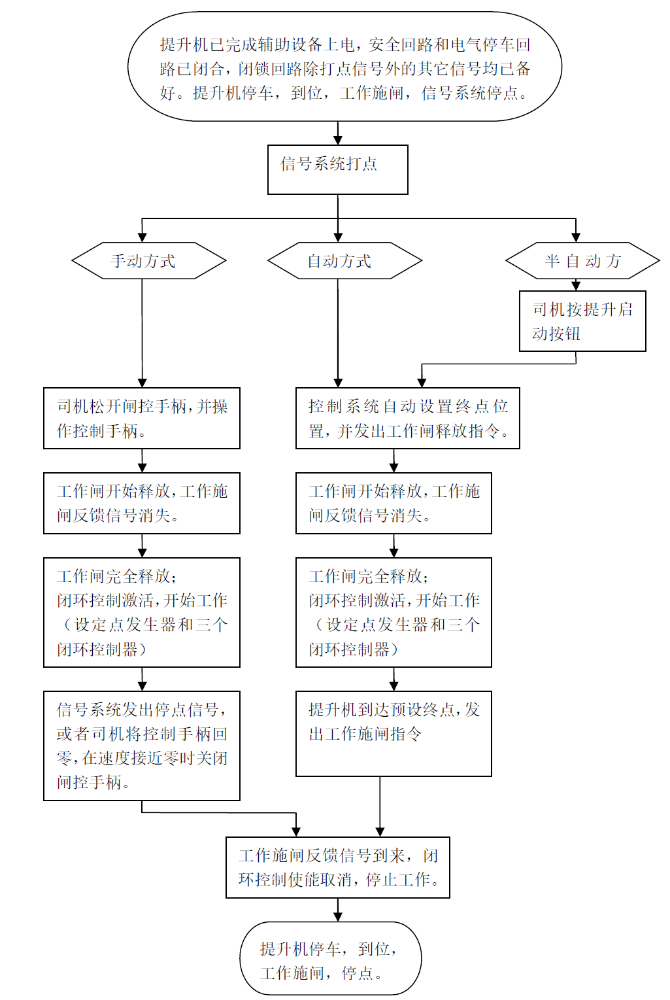
图9-1：系统工作过程流程图（第26页）
10. 系统调试与维护
10.1 调试工具
🛠️ 硬件工具
- 电工常用工具
- 数字万用表
- IbaPDA数据采集和分析软件（带USB授权）
💿 软件工具
- SIMATIC Step 7 - 用于S7 PLC编程和调试
- CFC 和 D7 SYS - SIMATIC Step 7的选件，用于FM458的编程和调试
- WinCC Flexible 开发和运行软件 - 用于人机界面HMI的开发
10.2 调试内容
▶ 挂绳前调试内容
- 接线检查
- 中压配电系统上电和调试
- 低压配电系统上电
- 提升机控制系统上电
- 辅助设备接口信号检测和单独调试
- S7 PLC功能调试
- 配合传动调试
- 编码器粗调
- 和传动联调，闭环控制初调
- 和传动联调，闭环控制优化
- 检测液压控制系统接口信号
- 和液压控制系统联调（模拟测试）
- 液压控制系统优化
▶ 挂绳后调试内容
- 井筒开关安装和信号检测
- 过卷保护和过卷旁路调试
- 编码器精调
- 同步开关调试
- 提升工艺监视调试
- 闸控系统空载优化试验
- 手动方式提速
- 自动方式调试
- 井筒信号/装卸载接口检测
- 井筒信号/装卸系统载联调
- 带载调试
- 液压制动系统带载及空载优化调试
- 闭环控制优化
- 操作台和人机界面显示
- 安全保护试验
- 试运行，验收，培训
10.3 故障分析与判断
提升机是一个较为复杂而完整的机电自动化系统，涉及机械、液压、中低压配电、大功率传动和自动化系统。
🔧 故障分类
- 自动化系统硬件故障：模块指示灯、更换模块
- 通讯故障：Profibus DP网络、通讯模块指示灯
- 传动故障：传动操作面板故障信息
- 液压制动系统故障：液压系统操作面板故障信息
- 提升工艺监视故障：使用诊断PC软件分析
- 闭环控制故障：使用IbaPDA软件分析曲线
- 外围设备或信号故障：传感器、执行器或接线故障
📝 知识检查
📊 学习总结
✅ 应知应会要点
- 系统架构：双PLC（系统A + 系统B）冗余设计
- 闭环控制：三闭环（位置、速度、电流）
- 安全保护：三级回路（SAC、ESC、LOC）
- 安全监视：16项监视功能，双通道冗余
- 液压系统：COBRA 01，n+1通道设计
- 调试工具：Step 7、CFC、WinCC Flexible、IbaPDA
🎓 进一步学习建议
- 深入学习SIMATIC S7-400 PLC编程
- 掌握FM458工艺控制器的工作原理
- 理解Profibus DP通讯网络
- 学习液压制动系统COBRA 01的维护
- 熟练使用诊断PC软件进行故障分析